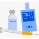

Imp: DKA
Diet: NPO
Activity: CBR
Condition: bad
Please:
1.Iv lineX2 fixed
2.CVS q4h
3.POM & COM
4. O2Therapy With nasal 4-6lit/min if o2<90
5. Folly fixed & control I/O
6. ECG
7. CBC diff BUN Cr Na K Ca VBG BS Amylase Lipase UA U/C ABG
8. Check BS q1h
9. Check K & VBG q4h
10. Serum NS 2lit (20cc/kg) stat iv in 1-3h
11. Line1: Serum HS 100 - 150 cc/h +15%kcl
12. Line 2: serum HS 100 - 150 cc/h +insulin regular 6u/h (0.1u/kg/h)
13.Amp ceftriaxone 1gr iv stat than bid (if infection)
If Need:
14.Amp Bicarbonate 1 vial in 200cc NS +10cc kCl in 2h
شرح حال: بیمار با دهیدراسیون،تنفس کوسمال، تاکی پنه تاکی کاردی، درد شکم حالت تهوع ، و.. مراجعه میکنند.
نکته: هدف از درمان این بیماران برطرف کردن اسیدوز میباشد.
نکته: تا زمانی که پتاسیم بیمار مشخص نشده به بیمار انسولین ندهید
برای تعیین مقدار پتاسیم مورد نیاز به صورت زیر عمل کنید:
K<3.2 : 80meq/lit 3.2<k<4.5 : 40meq/lit
4.5<k<5.5 : 20meq/lit 5.5<k : 0meq/lit KCL
نکته: با توجه به اینکه هدف اصلی برطرف کردن اسیدوز بیمار است درصورت افت قند میتونید به بیمارسرم قندی بدهید.
BS<250: HS+DW5%
150<BS<200: HS+DW7.5%
100<BS<150: HS+DW10% in s1/2
BS<100: HS+DW12.5% in s ½
نکته: معیار خروج بیمار از DKA :
Ph>7.3 hco3>18 BS<200
نکته: تجویز بیکربنات اصلا توصیه نمیشه مگر اینکه PH<7 باشد
Sign and symptomes
▪️تشنگی و پر نوشی
▪️پر ادراری
▪️ضعف و بی حالی
▪️گیجی و کما
▪️درد شکم
▪️تهوع و استفراغ
▪️گیجی و کما
▪️کاهش تعریق و خشکی پوست
▪️مخاطات خشک
▪️کاهش تروگور پوستی
▪️تنفس کتوتیک
▪️رفلکس های کاهش بافته
▪️تنفس دشوار
1️⃣ پانکراتیت حاد
2️⃣ کتواسیدوز الکلی
3️⃣ آپاندیسیت
UTI 4️⃣
5️⃣ کما هایپر اسمولار و HHS
6️⃣ هایپوفسفاتمی
7️⃣ هایپوترمی
8️⃣ اسیدز متابولیک
9️⃣ مسمومیت با سالیسیلات
🔟 شوک سپتیک
1️⃣1️⃣ MI
1️⃣2️⃣ اورمی
تصویری برای این نسخه موجود نیست.